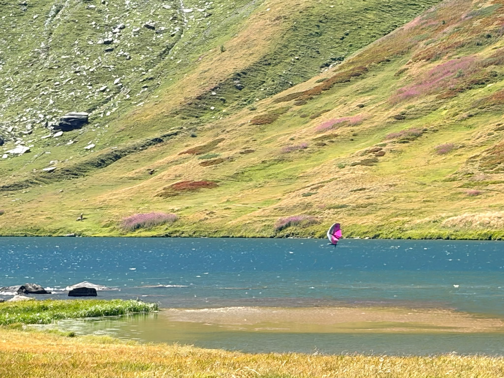
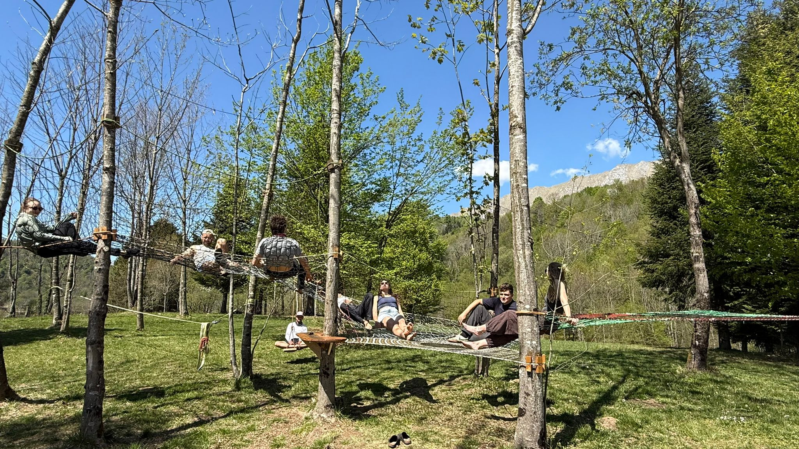

Costruisco database, CRM e strumenti interni per aziende di affitti brevi, immobiliare e turismo. Nel settore dal 2016: prima revenue, canali e operazioni, oggi il software.
- Prima
- Revenue e canali a Trieste Villas, direttore sportivo della Barcolana, logistica del Nastro Rosa Tour, sviluppo commerciale in Seably
- Strumenti
- Postgres, Next.js, Airtable, AppSheet, Google Apps Script, flussi AI
- Base
- Trieste, lavoro da remoto
Lavoro
In corso
2026–oggiNoura TrainingSviluppo del CRM600+ clienti · 15 trainer
Noura è uno studio di personal training a Trieste con oltre 600 clienti e 15 trainer. Ho progettato e sviluppato il loro CRM su misura: un unico sistema in cui trainer, ufficio e direzione seguono ogni cliente, dalla prima valutazione al programma di allenamento. È in produzione da ottobre 2026 e lo staff lo usa ogni giorno.


Screenshot con dati di esempio: nessun dato reale dei clienti
Cosa faccio
- Creazione del CRM: scheda cliente, anamnesi, assessment, programmi di allenamento e note, con viste e permessi diversi per trainer, ufficio, direzione e professionisti.
- Certificati medici: archivio digitale per cliente, lettura automatica della data di scadenza, avvisi e promemoria quando un certificato manca o è scaduto.
- Relazione con il cliente: agenda sincronizzata con il gestionale delle prenotazioni, follow-up, comunicazione interna tra trainer e liste di azione per non perdere i clienti che stanno per abbandonare.
- Migrazione dello storico dai vecchi fogli e dalla vecchia app, con backup e continuità dei dati.
Risultati
- Oltre 600 schede cliente in un’unica fonte affidabile, al posto di fogli sparsi.
- Certificati medici sotto controllo: chi non è in regola si vede subito.
- Tutti i trainer operativi sul CRM dal lancio di ottobre 2026.
Tecnologie e strumenti
- Next.js
- Postgres
- Vercel
- Integrazione API
- OCR
- Ruoli e permessi
2026–oggiTrieste VillasDati, database e siti del gruppo7 brand immobiliari
Sono tornato nell’azienda in cui ho mosso i primi passi nel property management, questa volta sul fronte dati, guidando il livello informativo alla base di un gruppo immobiliare con sette brand, da Trieste al Lago d’Orta.
Cosa faccio
- Guido l’arricchimento dei database: pulizia, struttura e valorizzazione dei dati di immobili e clienti.
- Costruisco il livello dati e la reportistica su cui si basano le operazioni quotidiane.
- Collego portali immobiliari, fonti di contatti e strumenti interni in un’unica fonte affidabile.
- Curo i siti di tutti i brand del gruppo, con i dati sempre allineati.
I siti del gruppo
- TriesteVillasImmobili di pregio a Trieste e in Costiera↗
- TriesteImmobiliareCompravendite di ogni fascia a Trieste↗
- TriesteAffittiAffitti gestiti, da 1 a 18 mesi↗
- FriuliVillasVille e proprietà in Friuli Venezia Giulia↗
- LignanoVillasIl lusso sulla costa di Lignano↗
- SloveniaVillas NuovoLa costa slovena e il Carso, a pochi minuti da Trieste↗
- OrtaVillasCase e ville sul Lago d’Orta↗
Competenze
- Arricchimento database
- Analisi dati
- Reportistica
- Integrazione portali e CRM
2025–oggiWengen ApartmentsConsulente digitale e dati80 unità · 5+ M€
Una realtà di riferimento negli affitti brevi delle Alpi svizzere: 80 unità a Wengen e oltre 5 M€ di ricavi lordi. Supporto il team su dati, tecnologia e automazione.
Cosa faccio
- Strutturo e arricchisco il database alla base dell’azienda.
- Creo dashboard e report che trasformano i dati di PMS e canali in decisioni.
- Sviluppo app interne con AppSheet e Airtable per operazioni, housekeeping e check-in.
- Realizzo siti web e strumenti interni.
- Introduco flussi di AI agentica e automazioni con Apps Script.
Risultati
- Un’unica fonte affidabile per tutto il portafoglio.
- Attività manuali sostituite da automazioni e dashboard consultabili in autonomia.
- Decisioni più rapide su prezzi e canali, sostenute dai dati.
Tecnologie e strumenti
- Airtable
- AppSheet
- Dashboard
- Arricchimento database
- Apps Script
- Flussi AI
2023–oggiVertical Sailing TourDirettore tecnico6 destinazioni
Un tour operator che organizza spedizioni tra arrampicata e vela nel Mediterraneo, unendo montagna e navigazione in un unico viaggio. Come direttore tecnico seguo tecnologia, dati e operazioni dietro ogni stagione.
Cosa faccio
- Progetto gli itinerari e coordino l’operatività sul campo.
- Costruisco i sistemi di prenotazione, CRM e gestione contatti, incluso un classificatore da Gmail ad Airtable.
- Gestisco il brand, il sito web e i dati alla base di ogni stagione.
Competenze
- Operazioni
- Airtable CRM
- Pipeline contatti
- Brand e web
- Apps Script
Prima
2025–2026Lucca Apartments & VillasConsulente digitale e dati300+ unità · 20+ M€
Una delle realtà europee di riferimento negli affitti brevi: oltre 300 unità in Toscana e più di 20 M€ di ricavi lordi. Ho supportato il team su dati, tecnologia e automazione.
Cosa ho fatto
- Ho strutturato e arricchito il database alla base dell’azienda.
- Ho creato dashboard e report che trasformano i dati di PMS e canali in decisioni.
- Ho sviluppato app interne con AppSheet e Airtable per operazioni, housekeeping e check-in.
- Ho realizzato siti web e strumenti interni.
- Ho introdotto flussi di AI agentica e automazioni con Apps Script.
Risultati
- Un’unica fonte affidabile per oltre 300 unità.
- Attività manuali sostituite da automazioni e dashboard consultabili in autonomia.
- Decisioni più rapide su prezzi e canali, sostenute dai dati.
Tecnologie e strumenti
- Airtable
- AppSheet
- Dashboard
- Arricchimento database
- Apps Script
- Flussi AI
2023–2025AJL AtelierConsulente e specialista tecnologicoProperty manager, più mercati
AJL Atelier è una società di consulenza specializzata nel settore degli affitti brevi. Ho lavorato come consulente e specialista tecnologico con property manager e operatori attivi in diversi mercati.
Cosa ho fatto
- Data engineering: database strutturati, pipeline e reportistica per i portafogli dei clienti.
- Consulenza revenue: strategie di prezzo, mix dei canali e analisi delle performance OTA.
- Ottimizzazione dei processi con un approccio lean alle operazioni e ai flussi di check-in.
- App no-code e automazioni per rendere scalabili le attività ripetibili.
Tecnologie e strumenti
- Data engineering
- Dashboard
- Revenue management
- Lean e progettazione dei processi
- Automazioni no-code
2021–2023Seably.comResponsabile sviluppo commercialeSponsor per ~2 M€ l’anno
Seably è una piattaforma SaaS B2B per la formazione marittima online, utilizzata da compagnie di navigazione e marittimi in tutto il mondo. Ho seguito sviluppo commerciale, dati e sponsorizzazioni.
Cosa ho fatto
- Ho costruito e automatizzato le pipeline dei dati commerciali e dei clienti.
- Ho progettato certificati digitali su blockchain per il completamento dei corsi.
- Analisi dati e reportistica sull’utilizzo della piattaforma e sulle vendite.
- Ho gestito un programma di sponsorizzazioni da circa 2 M€ all’anno.
Tecnologie e strumenti
- Pipeline dati
- Analisi dati
- Blockchain / Web3
- Vendite SaaS B2B
- Sponsorizzazioni
2020–2021Nastro Rosa TourResponsabile logistica8 tappe in meno di 30 giorni
Un evento velico itinerante lungo le coste italiane, con un villaggio mobile da montare e smontare a ogni tappa. Ho gestito la logistica necessaria per spostarlo attraverso il Paese.
Cosa ho fatto
- Ho pianificato e coordinato la logistica di 8 tappe in meno di 30 giorni.
- Ho gestito trasporto, montaggio e smontaggio in ogni porto.
- Ho coordinato fornitori, autorità locali e squadre sul posto.
- Ho seguito la gestione delle sponsorizzazioni del tour.
Competenze
- Logistica
- Gestione eventi
- Coordinamento fornitori
- Sponsorizzazioni
2018–2020BarcolanaDirettore sportivo2.500+ barche iscritte
La Barcolana si svolge ogni ottobre nel Golfo di Trieste ed è la regata velica più grande del mondo. Come direttore sportivo ho gestito l’intera componente agonistica di un evento con migliaia di barche sulla stessa linea di partenza.
Cosa ho fatto
- Ho gestito con un software le iscrizioni di oltre 2.500 barche.
- Ho seguito permessi, convalida delle iscrizioni e documentazione degli equipaggi.
- Ho coordinato gestione in acqua, procedure di partenza e sicurezza.
- Ho fatto da raccordo tra comitato di regata, autorità e concorrenti.
Competenze
- Gestione eventi
- Software iscrizioni
- Operazioni in acqua
- Coordinamento stakeholder
2017–2019Trieste VillasRevenue e canaliTeam di 10 persone
All’epoca Trieste Villas era una società di property management. Ho guidato revenue e channel management, coordinando le operazioni quotidiane degli affitti sull’intero portafoglio.
Cosa ho fatto
- Ho gestito la strategia revenue: prezzi, occupazione e ottimizzazione della durata dei soggiorni.
- Ho gestito il mix dei canali tra Airbnb, Booking, VRBO e prenotazioni dirette.
- Ho coordinato le operazioni end-to-end: prenotazioni, check-in e housekeeping.
- Ho guidato un team di 10 persone.
Competenze
- Revenue management
- Channel management
- Operazioni affitti
- Leadership del team
2016BluewagoResponsabile partnerPoi acquisita
Bluewago era un tour operator dedicato alla vela, successivamente acquisito. Come responsabile partner ho costruito e gestito sia l’offerta — skipper e itinerari — sia la domanda — prenotazioni e contatti.
Cosa ho fatto
- Ho selezionato e gestito la rete di skipper.
- Ho creato e confezionato itinerari a vela.
- Ho seguito prenotazioni e coordinamento dei clienti.
- Ho gestito l’acquisizione di contatti per riempire il calendario.
Competenze
- Gestione partner
- Progettazione itinerari
- Gestione prenotazioni
- Acquisizione contatti
Progetti
Con clienti e partner
- Vento BarcolanaIl vento in tempo reale sul percorso della regata, da 6 centraline e boe del Golfo. Con Barcolana, ottobre 2026.Apri ↗Articolo
- RealEstate AIUn sito sull’immobiliare che si scrive da solo, in tre lingue: articoli, immagini e video col pilota automatico, ogni contenuto AI dichiarato. Gruppo Trieste Villas, 2026.Apri ↗
- Scheda 0161Due ville e uno chalet per TriesteVillas, descritti con Claude: il mare misurato punto per punto, la pensione del 1913, cosa manca scritto chiaro.Articolo
Strumenti e app
- Rendita immobiliareAffitto breve, medio termine, 4+4 o 3+2 concordato: quale rende di più. Occupazione, cedolare e IMU comprese.ApriArticolo
- Affitto o acquistoIl confronto sul patrimonio netto dopo N anni, con chi affitta che investe la differenza.ApriArticolo
- Holiday RadarQuando vanno in vacanza i mercati che raggiungono la tua casa in auto. 1.318 festività, un punteggio di domanda a settimana.ApriArticolo
- Consumi di casaLuce, gas, acqua e Wi-Fi di un appartamento in un anno, partendo dagli occupanti.ApriArticolo
- VentoTrieste.infoVento, raffiche, previsioni, mare e webcam del golfo di Trieste.Apri ↗Articolo
- FiscalNinjaImposta e INPS del forfettario calcolate a ogni fattura incassata, fino al piano F24. In sviluppo.ScopriArticolo
- 101 DesideriIl metodo di Igor Sibaldi come quaderno guidato. App per il telefono, funziona offline.Apri ↗Articolo
- Demo CRM onboardingDashboard operativa: script, KPI e fasi Kanban su dati sintetici.Apri ↗
Ospitalità
- Villa VolpeProprietario e host, Lago d’Orta. Dalla gestione quotidiana ai dati, tutto in casa.Sito ↗
- Il MetroneSito web e calendario prenotazioni, Custoza.Sito ↗
- Dame MaltaConsulenza privata: web, distribuzione e dati.Sito ↗
- Trips CommunityPartner e primo investitore del primo hotel NFT prenotabile.Sito ↗
Diario
- Due ville, uno chalet e un annuncio come non l’avevamo mai visto
- Vento Barcolana in tempo reale: il tool costruito con Barcolana
- FiscalNinja: le tasse del forfettario, dagli incassi all’F24
- Quanto costano le bollette all’anno? Lo stimatore dei consumi di casa
- Quanto rende un immobile in affitto? 4 regimi a confronto
Vela
≈6.561miglia nautiche in regata
Skipper con patente oltre le 12 miglia dal 2013. Sono cresciuto navigando con mio nonno su un ketch di 6,9 m al Lago d’Orta, poi cinque stagioni da istruttore di windsurf a Porto Pollo, in Sardegna. Da allora tra Mediterraneo e Atlantico, dalle flottiglie alle regate sui maxi yacht.
Regate
- Prosecco DOC
Barcolana 2022 · 2023 · 2024 · 2025 · 2026 · Tre Golfi 2024 · Record Brindisi–Corfù 2026 · Aegean 600 2026 (Line Honours) · Trofeo Bernetti 2026 (vittoria) · Veleziana 2026 - Duan
Swan Cup 2026 - Viriella
Maxi Yacht Rolex Cup 2024 · 2025 - Ancilla Domini
Veleziana 2024 · 2025 - Nashorn
ARC 2016, transatlantica Gran Canaria → Santa Lucia, 2.700 miglia - Lunz am Meer
Vulcano Race, Capri 2013 · Maxi Yacht Rolex Cup 2014 · 2015 · Swan Cup 2014 · 2016 · 2018 · Giraglia 2015 · Rolex Middle Sea Race 2015 · 2016 - BrainStrom
Invernale del Tigullio, Chiavari 2015 - Le Grifon
Trofeo Formenton 2011 · 2012 · 2013
Crociere e trasferimenti
- Ancilla Domini Trasferimenti Atene → Trieste
- Vertical Sailing TourSkipper e direttore tecnico. Arrampicata e vela in Sardegna (Cala Gonone), Kalymnos, Costiera Amalfitana e Maiorca; vela e trekking a Eolie ed Egadi
- BeBlueSkipper per flottiglie e clienti privati: Croazia, Grecia Ionica, Sardegna
- Kinina First mate, Genova → Canarie
- SOD 55Skipper per clienti Mondovela, nord Sardegna e Bocche di Bonifacio
- Mondovela Co-skipper e skipper, flottiglie in Croazia (Incoronate) e Grecia Ionica (Lefkada)
- Adriasail Trasferimenti Elba/Genova
- Le Grifon Trasferimenti Genova/Porto Pollo e scuola vela itinerante, prima da cliente, poi co-skipper
Formazione
- Patente nautica velaOltre le 12 miglia
- RYA Offshore Safety CourseMalta
- Istruttore di windsurfPorto Pollo, Sardegna
Link diretto a questa sezione: bebroggi.it/cv-velico
Fuori ufficio

Prosecco DOC, Maxi 90Foto Marco Valtimuzzo, 2026 
A prua sotto il gennakerProsecco DOC · Foto Marco Valtimuzzo 
Traversata atlanticaARC 2016 · 2.700 miglia 
Canale di CorintoTrasferimento di Ancilla Domini 
Wing foil al Lago di VerneyLa Thuile, 2000 m 
Wingfoil a BarcolaDa qui è nato VentoTrieste.info 
Maestro di snowboardGiappone 2018 
Creste di CourmayeurA piedi sotto il Monte Bianco 
Bagno nel ghiaccioUna botte sulle Alpi, alla Wim Hof 
Vela e trekkingMarettimo, Vertical Sailing Tour 
WindsurfLago Maggiore, oltre Isola Bella 
Costruire treenetNodi e alberi, artigianato lento